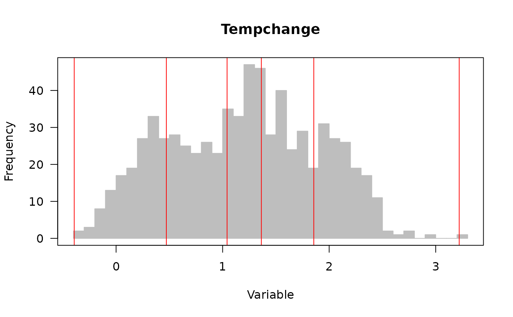
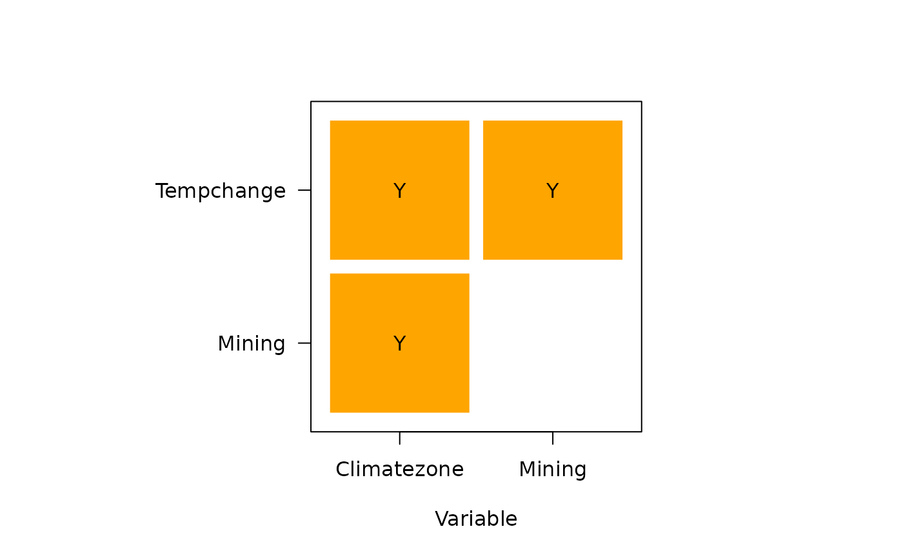

A one-step function for optimal discretization and geographical detectors for multiple variables and visualization.
Arguments
- formula
A formula of response and explanatory variables
- continuous_variable
A vector of continuous variable names
- data
A data.frame includes response and explanatory variables
- discmethod
A character vector of discretization methods
- discitv
A numeric vector of numbers of intervals
- x
A list of
gdmresult- ...
Ignore
Examples
###############
## NDVI: ndvi_40
###############
## set optional parameters of optimal discretization
## optional methods: equal, natural, quantile, geometric, sd and manual
discmethod <- c("equal","quantile")
discitv <- c(4:5)
## "gdm" function
ndvigdm <- gdm(NDVIchange ~ Climatezone + Mining + Tempchange,
continuous_variable = c("Tempchange"),
data = ndvi_40,
discmethod = discmethod, discitv = discitv)
ndvigdm
#> Explanatory variables include 1 continuous variables.
#>
#> optimal discretization result of Tempchange
#> method : quantile
#> number of intervals: 5
#> intervals:
#> -0.39277 0.471748 1.041764 1.363464 1.855572 3.22051
#> numbers of data within intervals:
#> 143 142 143 142 143
#>
#> Geographical detectors results:
#>
#> Factor detector:
#> variable qv sig
#> 1 Climatezone 0.8218335 7.340526e-10
#> 2 Mining 0.1411154 6.734163e-10
#> 3 Tempchange 0.2991928 5.146470e-10
#>
#> Risk detector:
#> Climatezone
#> itv meanrisk
#> 1 Bsk 0.143572961
#> 2 Bwk 0.004536505
#> 3 Dwa 0.321735000
#> 4 Dwb 0.343155655
#> 5 Dwc 0.444868361
#>
#> Mining
#> itv meanrisk
#> 1 very low 0.21008297
#> 2 low 0.03294513
#> 3 medium 0.30733460
#> 4 high 0.26695286
#> 5 very high 0.19176875
#>
#> Tempchange
#> itv meanrisk
#> 1 [-0.393,0.472] 0.04191322
#> 2 (0.472,1.04] 0.17022380
#> 3 (1.04,1.36] 0.33167483
#> 4 (1.36,1.86] 0.27784937
#> 5 (1.86,3.22] 0.19882217
#>
#> Climatezone
#> interval Bsk Bwk Dwa Dwb Dwc
#> 1 Bsk <NA> <NA> <NA> <NA> <NA>
#> 2 Bwk Y <NA> <NA> <NA> <NA>
#> 3 Dwa Y Y <NA> <NA> <NA>
#> 4 Dwb Y Y N <NA> <NA>
#> 5 Dwc Y Y Y Y <NA>
#>
#> Mining
#> interval very low low medium high very high
#> 1 very low <NA> <NA> <NA> <NA> <NA>
#> 2 low Y <NA> <NA> <NA> <NA>
#> 3 medium Y Y <NA> <NA> <NA>
#> 4 high Y Y N <NA> <NA>
#> 5 very high N Y Y Y <NA>
#>
#> Tempchange
#> interval [-0.393,0.472] (0.472,1.04] (1.04,1.36] (1.36,1.86]
#> 1 [-0.393,0.472] <NA> <NA> <NA> <NA>
#> 2 (0.472,1.04] Y <NA> <NA> <NA>
#> 3 (1.04,1.36] Y Y <NA> <NA>
#> 4 (1.36,1.86] Y Y Y <NA>
#> 5 (1.86,3.22] Y N Y Y
#> (1.86,3.22]
#> 1 <NA>
#> 2 <NA>
#> 3 <NA>
#> 4 <NA>
#> 5 <NA>
#>
#> Interaction detector:
#> variable Climatezone Mining Tempchange
#> 1 Climatezone NA NA NA
#> 2 Mining 0.8345 NA NA
#> 3 Tempchange 0.8483 0.3962 NA
#>
#> Ecological detector:
#> variable Climatezone Mining Tempchange
#> 1 Climatezone <NA> <NA> <NA>
#> 2 Mining Y <NA> <NA>
#> 3 Tempchange Y Y <NA>
plot(ndvigdm)
#> Optimal discretization process ...
#>
#> Optimal discretization result ...
#>

#> plot factor detectors ...
#>
#> plot risk mean values ...
#>
#> plot risk detectors ...
#>
#> plot interaction detectors ...
#>
#> plot ecological detectors ...

if (FALSE) { # \dontrun{
#############
## H1N1: h1n1_100
#############
## set optional parameters of optimal discretization
discmethod <- c("equal","natural","quantile")
discitv <- c(4:6)
continuous_variable <- colnames(h1n1_100)[-c(1,11)]
## "gdm" function
h1n1gdm <- gdm(H1N1 ~ .,
continuous_variable = continuous_variable,
data = h1n1_100,
discmethod = discmethod, discitv = discitv)
h1n1gdm
plot(h1n1gdm)
} # }